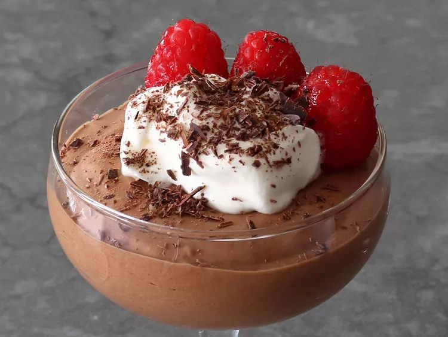

Chocolate Mousse for Beginners
This chocolate mousse for beginners is the all-time easiest method, perfect for beginners, but even experts may
want to pay attention,
because this technique produces the most delicious, most perfectly-textured mousse I've ever had.

Ingredients
- 3 1/2 ounces dark chocolate (62% cacao is ideal)
- 1 tablespoon unsalted butter
- 2 large egg yolks
- 1 tablespoon white sugar
- 1/4 cup water
- 1 tiny pinch salt
- 1/2 cup chilled heavy whipping cream
Directions
- Break up or chop chocolate into small pieces and set aside with butter.
- Add egg yolks, sugar, water, and salt to a metal mixing bowl. Cook, whisking, directly over medium-low heat
until the mixture is thick, foamy, and hot to the touch
(145 to 150 degrees F (63 to 65 degrees C)).
- Once the yolk mixture is thick and hot, add chocolate and butter, and whisk until all chocolate is melted. Let
rest for a few minutes on the counter,
whisking occasionally to further cool the mixture to just above or at room temperature.
The chocolate mixture shouldn't go into the whipped cream while still warm, but if cooled too long, the mixture
may get too firm to fold in.
- Whisk cold cream until medium stiff peaks form. If cream is whisked further, it will separate and the final
texture will be grainy.
- Transfer about 1/3 of chocolate mixture into whipped cream, and fold with a spatula until almost incorporated.
Gently fold in remaining chocolate,
trying to keep as much air in the mixture as possible.
- Transfer into 4 serving dishes, wrap, and chill before serving, at least 1 hour.